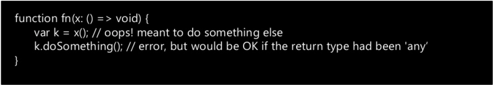

Microsoft Typescript
By Stanislav Vitvitskiy
2020
- Intro
- Installation Process
- TypeScript Syntax
- Do's and Don'ts
- Conclusion
Introduction
JavaScript that scales.
Introduction
Microsoft Typescript is a statically typed compiled language. It is a simple JavaScript code which runs in any browser, Node.js or in any JavaScript engine that supports ECMAScript 3 (or newer).
Recent rise of TypScript's popularity, data from Google Trends
TypeScript Facts
- Large and scale application development
- Language, not a framework
- Cross-compiles to JavaScript
- Produces idiomatic JavaScript
- Doesn‘t try to replace JavaScript
- Offers missing language features (Anticipates ES6, …)
- Is a superset of JavaScript (Promises easy migration of JS code)
- JS libs can be used easily
- (Optional) static typing
Installing TypeScript
There are two main ways to get the TypeScript tools:
- Via npm (the Node.js package manager) / yarn add typescript
- By installing TypeScript’s Visual Studio plugins.
Text Editors with TS support
TypeScript is an open-source project but is developed and maintained by Microsoft and as such was originally supported only in Microsoft’s Visual Studio platform. Nowadays, there are a lot more text editors and IDEs that either natively or through plugins offer support for the TypeScript syntax, auto-complete suggestions, error catching, and built-in compilers.
Compiling process
Compiling to JavaScript TypeScript is written in .ts files (or .tsx for JSX), which can’t be used directly in the browser and need to be translated/converted to vanilla .js first.
This compilation process can be done in a number of different ways:
- In the terminal using the command line tool tsc.
- Directly in Visual Studio or some of the other IDEs and text editors.
- Using automated task runners such as grunt, gulp.
Compiling to JS
The following command takes a TypeScript file named main.ts and translates it into its JavaScript version main.js. If main.js already exists it will be overwritten.
- tsc main.ts
- We can also compile multiple files simultaneously by listing all of them or by applying wildcards :
- # Will result in separate .js files: main.js worker.js.
- tsc main.ts worker.ts
- # Compiles all .ts files in the current folder. Does NOT work recursively.
TypeScript Syntax
TypeScript Syntax – Classes
TypeScript Syntax – Interfaces
TypeScript Syntax – Generics
Do's and Don'ts | General types
Don’t ever use the types Number, String, Boolean, or Object. These types refer to non-primitive boxed objects that are almost never used appropriately in JavaScript code.
Do's and Don'ts | Callback types
Don't use the return type any for callbacks whose value will be ignored:
Do's and Don'ts | Callback types
Example:
Why: Using void is safer because it prevents you from accidently using the return value of x in an unchecked way
Do's and Don'ts | Overloads and Callbacks
Don't write separate overloads that differ only on callback arity -> Do write a single overload using the maximum arity:
Do's and Don'ts | Function Overloads
Don’t put more general overloads before more specific overloads, Do sort overloads by putting the more general signatures after more specific signatures:
Why: TypeScript chooses the first matching overload when resolving function calls. When an earlier overload is “more general” than a later one, the later one is effectively hidden and cannot be called.
Do's and Don'ts | Use Optional Parameters
Don’t write several overloads that differ only in trailing parameters, Do use optional parameters whenever possible:
Why: TypeScript chooses the first matching overload when resolving function calls. When an earlier overload is “more general” than a later one, the later one is effectively hidden and cannot be called.
Do's and Don'ts | Use Union Types
Don’t write overloads that differ by type in only one argument position, Do use union types whenever possible:
Note that we didn’t make b optional here because the return types of the signatures differ.
Migrating from Javascript
- Setting up your Directories
- Writing a Configuration File
- Integrating with Build tools(Gulp, Webpack)
Conclusion
Pros:
- High Value, low cost improvement over JavaScript
- Safe and more modular
- Solid path to ES 6
Cons:
- Still need to know JS quirks and features
- Current compiler slowish (Faster one is in development)